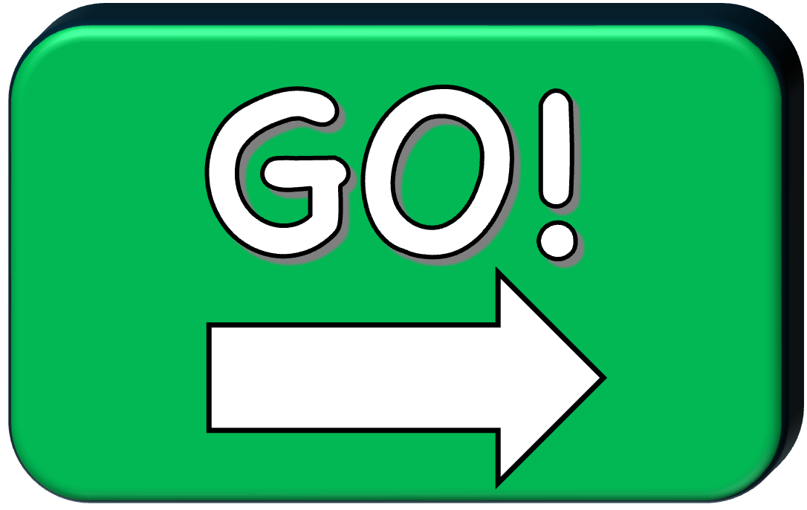

<!DOCTYPE html>
<html>

<head>
  <title>Spot the Difference Task</title>
  <script src="https://unpkg.com/jspsych@7.3.4"></script>
  <script src="https://unpkg.com/@jspsych/plugin-html-keyboard-response@1.1.3"></script>
  <script src="https://unpkg.com/@jspsych/plugin-video-keyboard-response@1.1.3"></script>
  <script src="https://unpkg.com/@jspsych/plugin-survey-text@2.1.0"></script>
  <link href="https://unpkg.com/jspsych@7.3.4/css/jspsych.css" rel="stylesheet" type="text/css" />
  <style>
    .spot-ingifference-container {
      display: flex;
      justify-content: center;
      gap: 40px;
      margin: 20px;
    }

    .image-wrapper {
      position: relative;
      display: inline-block;
    }

    .difference-image {
      display: block;
      border: 2px solid #333;
      cursor: crosshair;
    }

    .click-marker {
      position: absolute;
      border: 3px solid #00ff00;
      pointer-events: none;
      background: rgba(0, 255, 0, 0.2);
      box-sizing: border-box;
    }

    .wrong-marker {
      border-color: #ff0000;
      background: rgba(255, 0, 0, 0.2);
      width: 40px;
      height: 40px;
      transform: translate(-50%, -50%);
    }

    .instructions {
      text-align: center;
      margin-bottom: 20px;
      font-size: 18px;
    }

    .progress {
      text-align: center;
      margin-top: 20px;
      font-size: 16px;
      font-weight: bold;
    }

    #found-images-container {
      display: flex;
      flex-direction: row;
      gap: 8px;
      justify-content: center;
      align-items: center;
      margin-top: 8px;
    }

    #found-images-container {
      display: flex;
      gap: 8px;
      justify-content: center;
      align-items: center;
      margin-top: 8px;
    }

    #found-images-container .found-thumb {
      width: 80px;
      height: 80px;
      border: 4px solid #a02c93;
      position: relative;
      background-size: cover;
      background-position: center;
      display: flex;
      align-items: center;
      justify-content: center;
      font-weight: bold;
      color: #fff;
      background-color: transparent;
      opacity: 1;
      transition: opacity 0.2s, border-color 0.2s;
    }

    #found-images-container .found-thumb.revealed {
      opacity: 1;
    }

    #found-images-container .found-thumb img {
      width: 100%;
      height: 100%;
      object-fit: cover;
      display: block;
    }

    #found-images-container .thumb-label {
      display: none;
    }

    #found-images-container .found-thumb.revealed .thumb-label {
      display: block;
    }
  </style>
</head>

<body></body>
<script>
  // Custom plugin for spot the difference task
  class SpotDifferencePlugin {
    constructor(jsPsych) {
      this.jsPsych = jsPsych;
    }

    trial(display_element, trial) {
      var found_differences = [];
      var clicks = [];
      var start_time = performance.now();

      // Create HTML
      var html = `
        <div class="instructions">${trial.instructions}</div>
        <div class="spot-difference-container">
          <div class="image-wrapper" id="left-wrapper">
            
          </div>
          <div class="image-wrapper" id="right-wrapper">
            
          </div>
        </div>
        <div class="progress">
          <div id="found-images-container" aria-live="polite"></div>
        </div>
      `;

      display_element.innerHTML = html;

      // populate the found-images container with placeholder slots (one per difference)
      (function () {
        var container = document.getElementById('found-images-container');
        var numSlots = (typeof trial.num_found_slots === 'number' && trial.num_found_slots > 0) ? trial.num_found_slots : trial.differences.length;
        for (var i = 0; i < numSlots; i++) {
          var thumb = document.createElement('div');
          thumb.className = 'found-thumb';
          thumb.dataset.slot = i;
          if (trial.found_images && trial.found_images[i]) {
            thumb.dataset.slotSrc = trial.found_images[i];
          }
          var label = document.createElement('span');
          label.className = 'thumb-label';
          label.textContent = (i + 1);
          thumb.appendChild(label);
          container.appendChild(thumb);
        }
      })();

      // Add optional stop button (bottom-right). Behavior controlled by trial.stop_action
      var stopBtn = null;
      if (trial.stop_action) {
        stopBtn = document.createElement('img');
        stopBtn.id = 'stop-button';
        stopBtn.src = 'images/stop.png';
        stopBtn.alt = 'stop';
        stopBtn.style.position = 'fixed';
        stopBtn.style.right = '16px';
        stopBtn.style.bottom = '30px';
        stopBtn.style.width = '130px';
        stopBtn.style.height = '130px';
        stopBtn.style.cursor = 'pointer';
        stopBtn.style.zIndex = 9999;
        document.body.appendChild(stopBtn);

        var stopClicked = function () {
          // build trial_data similar to end_trial
          var end_time = performance.now();
          var rt = end_time - start_time;
          var trial_data = {
            rt: rt,
            duration_seconds: rt / 1000,
            differences_found: found_differences.length,
            total_differences: trial.differences.length,
            clicks: clicks,
            stopped: true,
            stop_action: trial.stop_action,
            phase: trial.phase || null
          };

          // remove stop button
          if (stopBtn && stopBtn.parentNode) stopBtn.parentNode.removeChild(stopBtn);
          // clear any max-duration timer
          if (typeof maxTimer !== 'undefined' && maxTimer) {
            clearTimeout(maxTimer);
          }

          if (trial.stop_action === 'end_experiment') {
            // finish current trial then prompt for subject number and save
            display_element.innerHTML = '';
            jsPsych.finishTrial(trial_data);
            promptForSubjectAndSave('Stopped by user');
          } else {
            // default: go to next trial
            display_element.innerHTML = '';
            jsPsych.finishTrial(trial_data);
          }
        };

        stopBtn.addEventListener('click', stopClicked);
      }

      // If trial.max_duration provided, end trial after that many ms (useful for spot_trial2)
      var maxTimer = null;
      function end_trial_spot2() {
        var end_time = performance.now();
        var rt = end_time - start_time;
        var trial_data = {
          rt: rt,
          duration_seconds: rt / 1000,
          differences_found: found_differences.length,
          total_differences: trial.differences.length,
          clicks: clicks,
          timed_out: true,
          phase: trial.phase || null
        };
        if (stopBtn && stopBtn.parentNode) stopBtn.parentNode.removeChild(stopBtn);
        if (maxTimer) clearTimeout(maxTimer);
        display_element.innerHTML = '';
        jsPsych.finishTrial(trial_data);
        // After timeout, prompt for subject number and save
        promptForSubjectAndSave('Timed out');
      }
      if (typeof trial.max_duration === 'number' && trial.max_duration > 0) {
        maxTimer = setTimeout(end_trial_spot2, trial.max_duration);
      }


      // Function to check if participant clicked on a difference
      function checkClick(x, y, imageId) {
        for (var i = 0; i < trial.differences.length; i++) {
          var diff = trial.differences[i];

          // Skip if already found
          if (found_differences.includes(i)) continue;

          // Check if click is within the region
          if (x >= diff.x && x <= diff.x + diff.width &&
            y >= diff.y && y <= diff.y + diff.height) {
            return i;
          }
        }
        return -1;
      }

      // add green border around found difference
      function addMarker(x, y, wrapper, isCorrect, width, height) {
        var marker = document.createElement('div');
        marker.className = 'click-marker' + (isCorrect ? '' : ' wrong-marker');

        if (isCorrect) {
          marker.style.left = x + 'px';
          marker.style.top = y + 'px';
          marker.style.width = width + 'px';
          marker.style.height = height + 'px';
        } else {
          marker.style.left = x + 'px';
          marker.style.top = y + 'px';
        }

        wrapper.appendChild(marker);

        if (!isCorrect) {
          setTimeout(() => marker.remove(), 1000);
        }
      }

      // clicks on images
      function handleImageClick(e) {
        var rect = e.target.getBoundingClientRect();
        var x = e.clientX - rect.left;
        var y = e.clientY - rect.top;
        var imageId = e.target.id;
        var wrapper = e.target.parentElement;

        // Record click
        clicks.push({
          x: x,
          y: y,
          image: imageId,
          time: performance.now() - start_time
        });

        // Check if click found a difference
        var diffIndex = checkClick(x, y, imageId);

        if (diffIndex !== -1) {
          found_differences.push(diffIndex);
          var diff = trial.differences[diffIndex];
          addMarker(diff.x, diff.y, wrapper, true, diff.width, diff.height);

          // Also mark the difference on the other image
          var otherWrapper = imageId === 'left-image' ?
            document.getElementById('right-wrapper') :
            document.getElementById('left-wrapper');
          addMarker(diff.x, diff.y, otherWrapper, true, diff.width, diff.height);

          // Reveal the next available slot in fixed order (regardless of which diff was clicked)
          var container = document.getElementById('found-images-container');
          // Insert the exact provided found image for this difference into the container
          if (trial.found_images && trial.found_images[diffIndex]) {
            var img = document.createElement('img');
            // Reveal into the next available placeholder slot (left-to-right)
            var nextSlot = container.querySelector('.found-thumb:not(.revealed)');
            if (nextSlot) {
              if (nextSlot.dataset && nextSlot.dataset.slotSrc) {
                var thumbImg = document.createElement('img');
                thumbImg.src = nextSlot.dataset.slotSrc;
                thumbImg.alt = 'found image ' + (parseInt(nextSlot.dataset.slot, 10) + 1);
                nextSlot.innerHTML = '';
                nextSlot.appendChild(thumbImg);
                nextSlot.classList.add('revealed');
                nextSlot.dataset.filledBy = diffIndex;
              } else {
                nextSlot.classList.add('revealed');
                nextSlot.dataset.filledBy = diffIndex;
              }
            }
          }
          //

          // Check if all differences found — only end if trial allows it
          if (found_differences.length === trial.differences.length) {
            if (trial.end_on_all_found !== false) {
              end_trial();
            }
          }
        }

      }

      // Add click listeners
      document.getElementById('left-image').addEventListener('click', handleImageClick);
      document.getElementById('right-image').addEventListener('click', handleImageClick);

      // End trial
      function end_trial() {
        var end_time = performance.now();
        var trial_data = {
          rt: end_time - start_time,
          differences_found: found_differences.length,
          total_differences: trial.differences.length,
          clicks: clicks,
          success: found_differences.length === trial.differences.length
        };

        // Wait 2 seconds before advancing
        setTimeout(function () {
          if (stopBtn && stopBtn.parentNode) stopBtn.parentNode.removeChild(stopBtn);
          if (maxTimer) clearTimeout(maxTimer);
          display_element.innerHTML = '';
          jsPsych.finishTrial(trial_data);
        }, 2000);
      }
    }
  }

  SpotDifferencePlugin.info = {
    name: 'spot-difference',
    parameters: {
      image_left: {
        type: 'STRING',
        default: undefined
      },
      image_right: {
        type: 'STRING',
        default: undefined
      },
      differences: {
        type: 'COMPLEX',
        array: true,
        default: []
      },
      found_images: {
        type: 'COMPLEX',
        array: true,
        default: []
      },
      num_found_slots: {
        type: 'INT',
        default: 0
      },

      image_width: {
        type: 'INT',
        default: 400
      },
      image_height: {
        type: 'INT',
        default: 400
      },
      stop_action: {
        type: 'STRING',
        default: 'next' // 'next' | 'end_experiment'
      },
      max_duration: {
        type: 'INT',
        default: 0
      },
      end_on_all_found: {
        type: 'BOOL',
        default: true
      },
      instructions: {
        type: 'STRING',
        default: ' '
      }
    }
  };

  // Global prompt & save function: asks for subject ID, builds CSV with ordered columns,
  // then triggers download and ends the experiment.
  function promptForSubjectAndSave(reason) {
    // create overlay
    var overlay = document.createElement('div');
    overlay.style.position = 'fixed';
    overlay.style.left = 0;
    overlay.style.top = 0;
    overlay.style.right = 0;
    overlay.style.bottom = 0;
    overlay.style.background = 'rgba(0,0,0,0.6)';
    overlay.style.display = 'flex';
    overlay.style.alignItems = 'center';
    overlay.style.justifyContent = 'center';
    overlay.style.zIndex = 10000;

    var box = document.createElement('div');
    box.style.background = '#fff';
    box.style.padding = '20px';
    box.style.borderRadius = '8px';
    box.style.maxWidth = '420px';
    box.style.width = '90%';

    var title = document.createElement('h3');
    title.textContent = 'Please enter Subject Number';
    box.appendChild(title);

    var input = document.createElement('input');
    input.type = 'text';
    input.placeholder = 'Subject Number';
    input.style.width = '100%';
    input.style.fontSize = '16px';
    input.style.marginBottom = '12px';
    box.appendChild(input);

    var btn = document.createElement('button');
    btn.textContent = 'Save and Finish';
    btn.style.fontSize = '16px';
    btn.style.padding = '8px 12px';
    box.appendChild(btn);

    overlay.appendChild(box);
    document.body.appendChild(overlay);

    btn.addEventListener('click', function () {
      var id = (input.value && input.value.trim()) ? input.value.trim() : 'unknown';
      try {
        jsPsych.data.addProperties({ ID: id });
        var rows = jsPsych.data.get().values();

        // Build headers in the requested order, exclude 'stimulus' and 'response'
        var ordered = [
          'ID', 'trial_type', 'trial_index', 'time_elapsed', 'internal_node_id',
          'phase', 'duration_seconds', 'differences_found', 'total_differences',
          'clicks', 'stopped', 'stop_action'
        ];

        var headerSet = new Set(ordered);
        // collect any additional keys (except stimulus/response) to append after the ordered ones
        var extraKeys = [];
        for (var i = 0; i < rows.length; i++) {
          var obj = rows[i];
          Object.keys(obj).forEach(function (k) {
            if (k === 'stimulus' || k === 'response') return;
            if (!headerSet.has(k) && extraKeys.indexOf(k) === -1) extraKeys.push(k);
          });
        }
        var headers = ordered.concat(extraKeys);

        // Build CSV
        var csvRows = [];
        csvRows.push(headers.join(','));
        for (var r = 0; r < rows.length; r++) {
          var row = rows[r];
          var vals = headers.map(function (h) {
            var v = (h in row) ? row[h] : '';
            if (v === null || v === undefined) return '';
            var s;
            if (typeof v === 'object') {
              try { s = JSON.stringify(v); } catch (e) { s = String(v); }
            } else {
              s = String(v);
            }
            // escape quotes
            if (s.indexOf(',') !== -1 || s.indexOf('"') !== -1 || s.indexOf('\n') !== -1) {
              s = '"' + s.replace(/"/g, '""') + '"';
            }
            return s;
          });
          csvRows.push(vals.join(','));
        }

        var csv = csvRows.join('\n');
        var file_name = id + '-Persistence.csv';

        var blob = new Blob([csv], { type: 'text/csv;charset=utf-8;' });
        var link = document.createElement('a');
        link.href = URL.createObjectURL(blob);
        link.download = file_name;
        document.body.appendChild(link);
        link.click();
        link.remove();
      } catch (err) {
        console.warn('Saving data failed:', err);
      }
      if (overlay && overlay.parentNode) overlay.parentNode.removeChild(overlay);
      if (jsPsych && jsPsych.endExperiment) jsPsych.endExperiment(reason || 'Finished');
    });
  }

  // Initialize jsPsych
  var jsPsych = initJsPsych({
    on_finish: function () {
      try {
        promptForSubjectAndSave('Finished');
      } catch (err) {
        console.warn('on_finish prompt failed:', err);
      }
    }
  });

  var subjectNumber = {
    type: jsPsychSurveyText,
    questions: [{ prompt: 'Subject Number:', name: 'id' }],
    data: { task_part: 'id_question' }
  };

  // Define your differences
  var differences_Trial1 = [
    { x: 132, y: 94, width: 81, height: 118 },    // seahorse
    { x: 305, y: 242, width: 74, height: 59 },    // starfish
    { x: 483, y: 176, width: 92, height: 82 }     // blue fish
  ];


  var differences_Trial2 = [
    { x: 150, y: 234, width: 93, height: 66 }   // yellow fish
  ];

  // Preload first video 
  var priorityVideo = document.createElement('video');
  priorityVideo.preload = 'auto';
  priorityVideo.src = 'videos/intro.mp4';
  priorityVideo.load();

  // Helper function to preload assets
  function preloadAssets(srcArray) {
    srcArray.forEach(function(src) {
      if (src.endsWith('.png')) {
        var img = new Image();
        img.src = src;
      } else if (src.endsWith('.mp4')) {
        var video = document.createElement('video');
        video.preload = 'auto';
        video.src = src;
      }
    });
  }

  // Only preload UI elements right away
  preloadAssets(['images/next_arrow.png', 'images/stop.png']);

  // Create timeline
  var timeline = [];

  // Instructions
  var instructions = {
    type: jsPsychHtmlKeyboardResponse,
    stimulus: `
      <div style="display:flex;flex-direction:column;align-items:center;justify-content:center;height:70vh;">
        
      </div>
    `,
    choices: "NO_KEYS",
    on_load: function () {
      var img = document.getElementById('start-arrow');
      if (img) {
        img.addEventListener('click', function () {
          jsPsych.finishTrial();
        });
      }
    }
  };
  timeline.push(instructions);

  // preface to first trial
  var intro = {
    type: jsPsychVideoKeyboardResponse,
    stimulus: ['videos/intro.mp4'],
    choices: "NO_KEYS",
    trial_ends_after_video: false,
    width: 300,
    height: 200,
    prompt: '<div id="arrow-container" style="display:none; position:fixed; right:16px; bottom:16px; z-index:10000;"></div>',
    on_load: function () {
      var videoContainer = document.querySelector('.jspsych-video-container');
      if (videoContainer) {
        videoContainer.style.width = '400px';
        videoContainer.style.height = '300px';
        videoContainer.style.position = 'fixed';
        videoContainer.style.top = '50%';
        videoContainer.style.left = '50%';
        videoContainer.style.transform = 'translate(-50%, -50%)';
      }
      
      // Preload trial 1 images while video plays
      preloadAssets([
        'images/training_3dif_left_image.png',
        'images/training_3dif_right_image.png',
        'images/found_1_differenceof3.png',
        'images/found_2_differenceof3.png',
        'images/found_3_differenceof3.png'
      ]);
      
      var video = document.querySelector('video');
      if (video) {
        video.style.width = '100%';
        video.style.height = '100%';
        video.style.objectFit = 'contain';
        video.addEventListener('ended', function () {
          var arrow = document.getElementById('arrow-container');
          if (arrow) arrow.style.display = 'block';
          var img = document.getElementById('intro-next-arrow');
          if (img) {
            img.addEventListener('click', function () {
              jsPsych.finishTrial();
            });
          }
        });
      }
    }
  };
  timeline.push(intro);


  // Spot the difference trial 1
  var spot_trial1 = {
    type: SpotDifferencePlugin,
    image_left: 'images/training_3dif_left_image.png',
    image_right: 'images/training_3dif_right_image.png',
    differences: differences_Trial1,

    // One image per difference (order must match `differences`)
    found_images: [
      'images/found_1_differenceof3.png',
      'images/found_2_differenceof3.png',
      'images/found_3_differenceof3.png'
    ],
    image_width: 300,
    image_height: 250,
    stop_action: 'next',
    phase: 'practice',
    on_load: function () {
      // Preload test trial assets while practice trial displays
      preloadAssets([
        'images/test_1dif_left_image.png',
        'images/test_1dif_right_image.png',
        'images/found_1_differenceof2.png',
        'videos/intro_to_test.mp4'
      ]);
    }
  };
  timeline.push(spot_trial1);

  // preface to test trial
  var prefacetotest = {
    type: jsPsychVideoKeyboardResponse,
    stimulus: ['videos/intro_to_test.mp4'],
    choices: "NO_KEYS",
    trial_ends_after_video: false,
    width: window.innerWidth,
    height: window.innerHeight,
    prompt: '<div id="arrow-container" style="display:none; position:fixed; right:16px; bottom:16px; z-index:10000;"></div>',
    on_load: function () {
      var videoContainer = document.querySelector('.jspsych-video-container');
      if (videoContainer) {
        videoContainer.style.width = '100vw';
        videoContainer.style.height = '100vh';
        videoContainer.style.position = 'fixed';
        videoContainer.style.top = '0';
        videoContainer.style.left = '0';
        videoContainer.style.marginTop = '-80px';
      }
      var video = document.querySelector('video');
      if (video) {
        video.style.width = '100%';
        video.style.height = '100%';
        video.style.objectFit = 'contain';
        video.addEventListener('ended', function () {
          var arrow = document.getElementById('arrow-container');
          if (arrow) arrow.style.display = 'block';
          var img = document.getElementById('intro-next-arrow');
          if (img) {
            img.addEventListener('click', function () {
              jsPsych.finishTrial();
            });
          }
        });
      }
    }
  };
  timeline.push(prefacetotest);

  // test trial (impossible task)
  var spot_trial_2 = {
    type: SpotDifferencePlugin,
    image_left: 'images/test_1dif_left_image.png',
    image_right: 'images/test_1dif_right_image.png',
    differences: differences_Trial2,
    // Single example found image for this trial
    found_images: ['images/found_1_differenceof2.png'],
    image_width: 300,
    image_height: 250,
    // render two placeholder boxes even though there's only one real difference
    num_found_slots: 2,
    stop_action: 'end_experiment',
    max_duration: 180000,
    end_on_all_found: false,
    phase: 'test',
  };
  timeline.push(spot_trial_2);

  // Run the experiment
  jsPsych.run(timeline);
</script>

</html>
